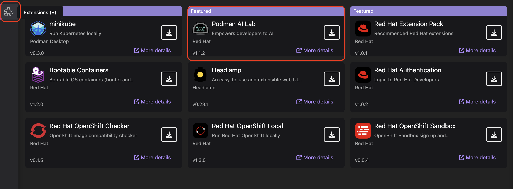
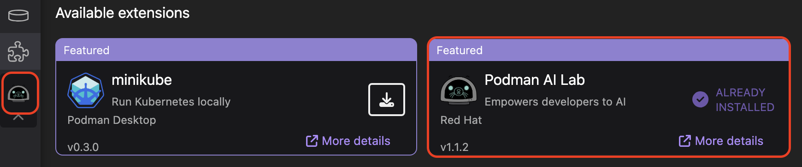

Podman AI Lab Extension
Installing the Podman AI Lab extension
Procedure
With Podman Desktop already installed, let’s install the Podman AI Lab extension in Podman Desktop.

-
Click on the extention icon in Podman Desktop, it looks like a puzzle and will be located on the left hand side navigation bar.
-
Optionally, search for Podman AI Lab Extension
-
Locate the Podman AI Lab extension tile
-
Click the down arrow button to install Podman AI Lab - version 1.1.2

Once the Podman AI Lab extension is installed, a new icon will appear in the Podman Desktop quick navigation bar on the left. Select this icon to access the Podman AI Lab dashboard.
Before we can use the AI Lab environment, there is one more step to complete, creating the Podman Machine.